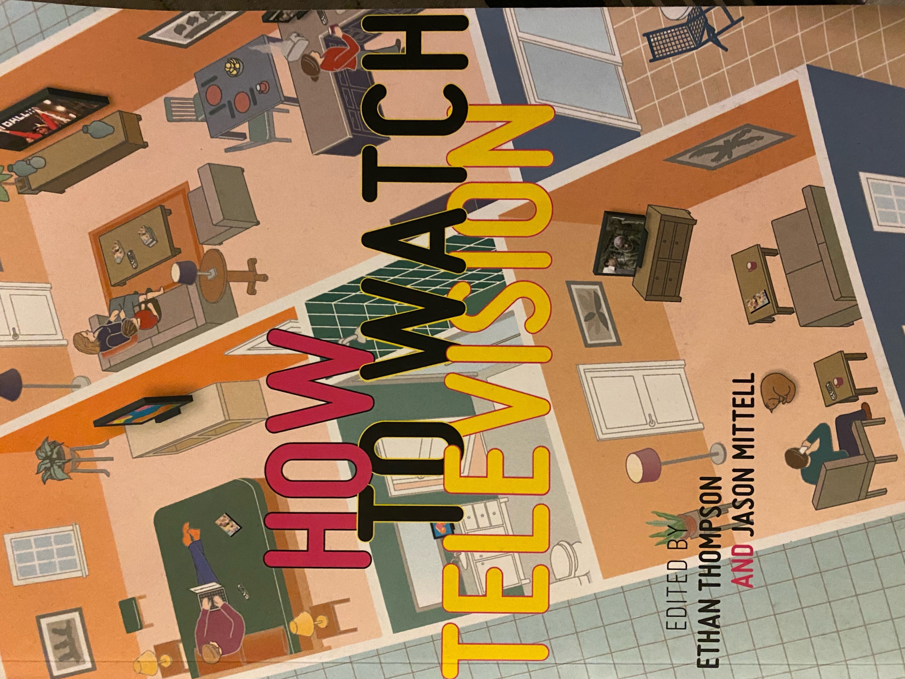

I thoroughly enjoy movies and tv shows because they have always been apart of my life. Both my parents worked for the movie industry and we always got free tickets to see new movies. I also feel like movies have deeper meanings and can point to a lot of things going on in the world. Also during quarantine there is not much else to do.
My favorite movie of all time is "Django Unchained" from the wild mind of Quentin Tarantino. The movie has great actors like Leonardo DiCaprio, Jamie Foxx, Christoph Waltz, and Samuel L. Jackson. It is aboutJamie Foxx who is a free slave and Christoph Waltz who is a bounty hunter. Together the two travel collecting bounty's and trying to find Jamie Foxx's wife. I would highly recommend watching this due tog the great directing of Quentin Tarantino. I guarantee you it will keep you entertained.
My 2nd favorite movie of all time is called "Almost Famous." It revolves around a young journalist name "William Miller" who starts writing for Rolling Stone Magazine in the early 1970s. He is given the cover and follows fictional band on tour named Still Water. While on tour deals with everything a rock band ensues. The main reason I enjoy this film so much is because of the score. The movie has great music throughout and features many original songs from the band. I would highly recommend watching it if you haven't seen it.
